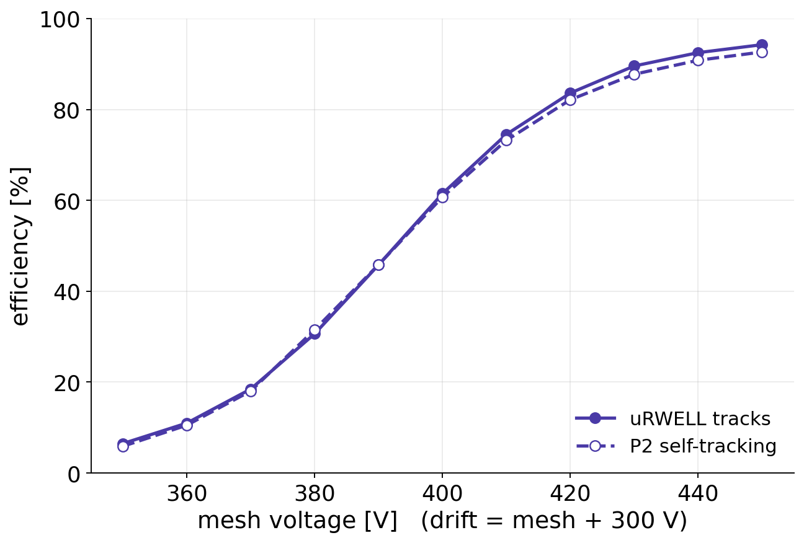
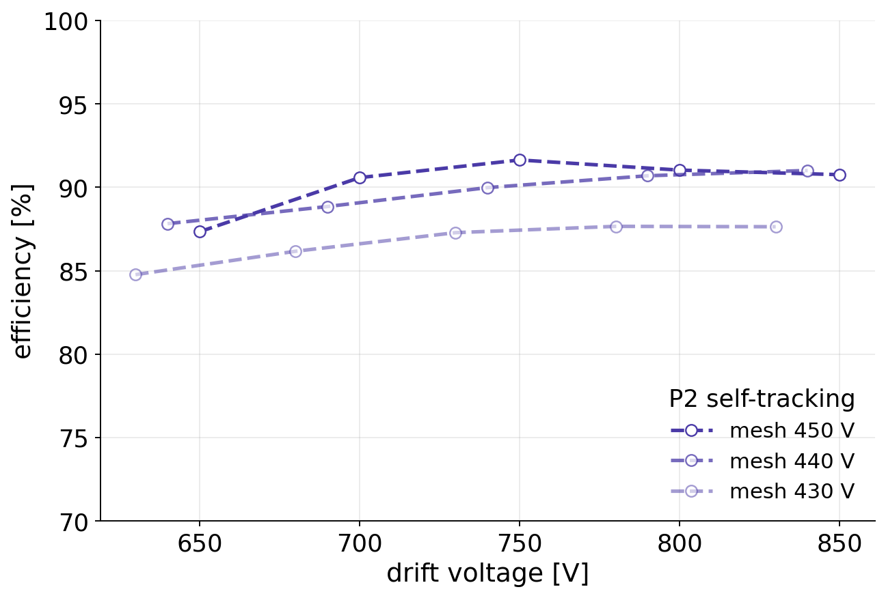
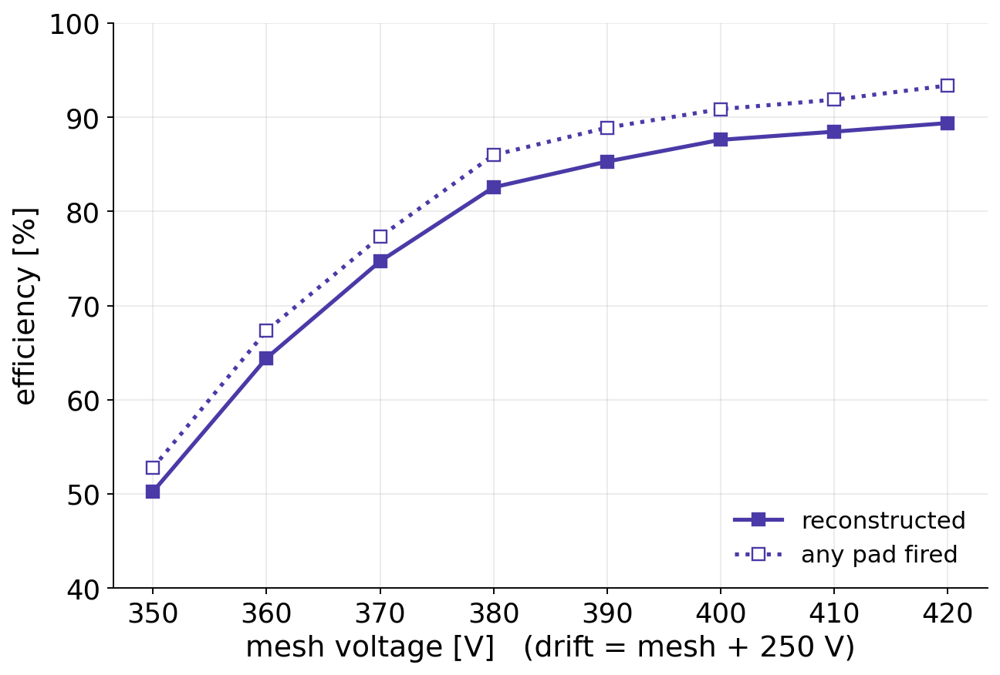
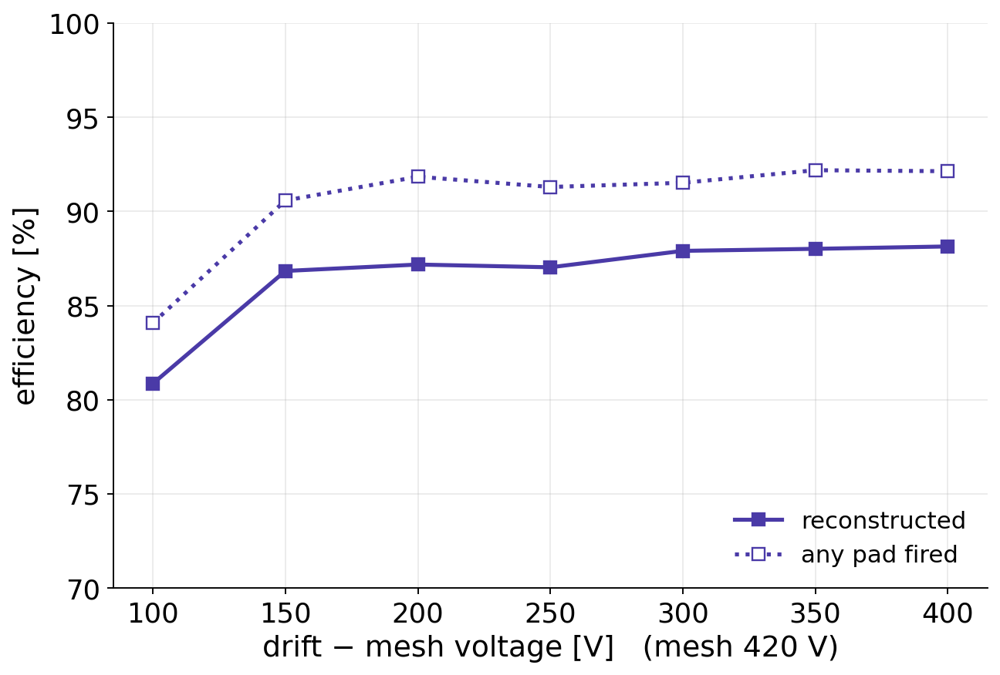
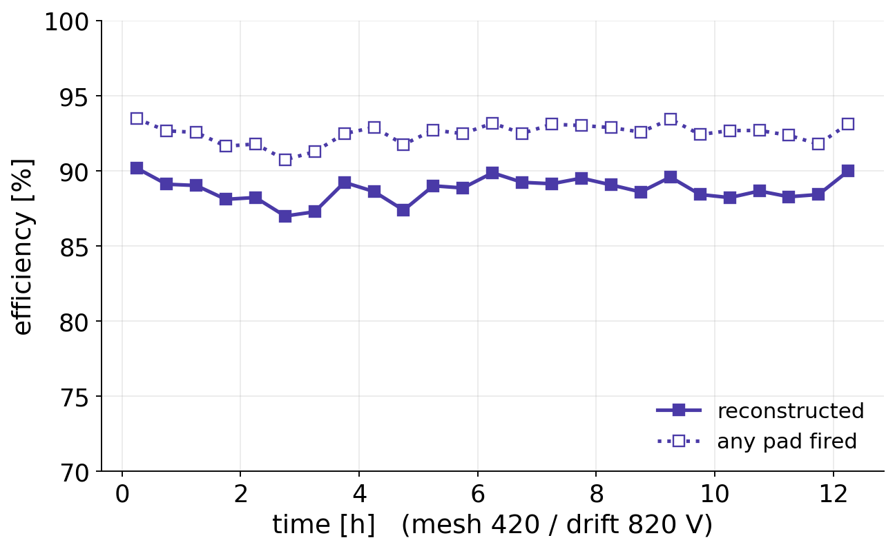
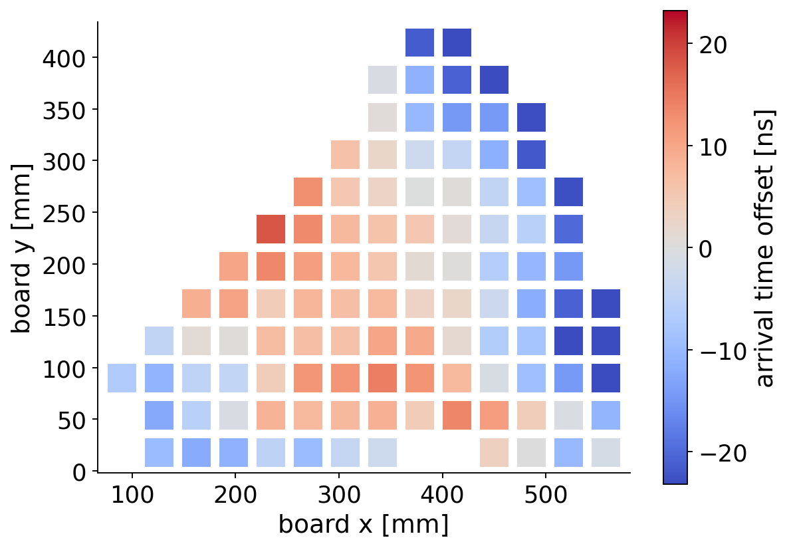
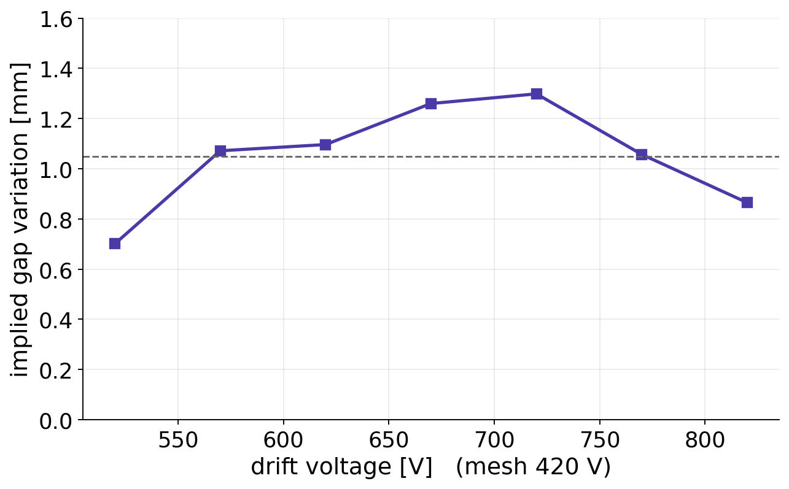

P2 BASKET chamber bulked at CERN
what we measured
SPS H4 muon beam (28–29 July 2026) and cosmic bench at Saclay (8–9 September 2026)
A. Kallitsopoulou · 14 September 2026 · DREAM readout only
The chamber and how it was tested
- P2 BASKET board and mesh supplied by CEA; bulk made at CERN (ref. 3717-A)
- 150 µm amplification gap; 0.5 mm Dynamask pillars on a 2 mm grid + 5 large 6.15 mm pillars → 4.9 % of the pad area
- 1280 pads (~12 × 12 mm), 1697 cm² active area; 4 mm drift gap
| Beam | Cosmic bench | |
|---|---|---|
| particles | SPS H4 muons | cosmic muons |
| reference | two uRWELL planes, or the other two P2 chambers | M3 telescope |
| area probed | ~13 % beam spot | 8 of 10 connectors read out |
| gas | Ar/CO₂/iC₄H₁₀ 93/5/2 | Ar/iC₄H₁₀ 95/5 |
The gases differ, so the gain at a given voltage differs. Compare curve shapes, not voltages. Bench efficiency: track reconstructed within 40 mm of the telescope track, pillars included.
Summary
| Result | |
|---|---|
| Beam efficiency | 94 % at mesh 450 / drift 750 V (uRWELL reference); 93 % with P2 self-tracking. Still rising at 450 V. |
| Bench efficiency | 89 % over 12 h at 420 / 820 V, flat in time; a pad fires for 93 % of tracks |
| Turn-on | clean in both setups; no plateau reached at the highest mesh voltage we used |
| Drift field | efficiency plateau from ~150 V above the mesh on the bench |
| Sparks (bench) | none up to 380 V mesh; ~30 / h at 420 V |
| Planarity | the signal-timing map suggests a drift-gap variation of order 1 mm (slides 7–8, needs confirmation) |
The chamber works and is stable. At the voltages we used, its efficiency is still limited by gain.
Beam: efficiency

mesh scan, drift field held fixed

drift scans at three mesh voltages
- Both references (uRWELL tracks, and the two other P2 chambers) agree within 1–2 points: 84 → 90 → 93 → 94 % at mesh 420 → 450 V.
- At fixed mesh, efficiency is flat above drift ≈ mesh + 300 V: the drift field is not the limit, the gain is.
Cosmic bench: efficiency vs voltage

mesh scan

drift scan (mesh 420 V)
- Mesh: 50 % at 350 V → 89 % at 420 V, still rising. We did not go higher, because the spark rate grows from 390 V (8 / h) to 420 V (30 / h).
- Drift: plateau at 87–88 % from drift − mesh ≈ 150 V onwards.
Cosmic bench: stability

- 12.3 h at mesh 420 / drift 820 V.
- Efficiency flat at 87–90 % in every 30-min bin; no charging-up and no drift.
- 35 sparks / h on the mesh. The affected periods are vetoed (12 % of the run); the spark rate settled at the same level as in the scan the day before.
Possible drift-gap variation (preliminary)

- Median signal arrival time per 36 mm region, relative to the chamber median, with per-connector cable delays removed.
- Later arrival (red) means a longer drift path, i.e. a larger gap.
- Signals arrive ~35 ns later in the middle than near the edges: a dome-like shape.
- Pulse height follows the same pattern, as expected for a longer drift path (not what a cable or electronics delay would give).
Possible drift-gap variation: size and caveats

- An electronic delay would stay constant in ns. A geometric effect scales with 1/drift velocity. Converted to distance, the timing swing stays roughly constant at 0.7–1.3 mm over the drift scan, which points to geometry.
- This is an indirect estimate, uncertain to a few tenths of a mm.
What we cannot tell yet: whether it comes from the bulked board itself (e.g. mesh tension after lamination), from how the chamber sits in our bench frame, or from the drift frame; we have one chamber in one orientation, and no direct mechanical measurement. A flatness measurement of the board, or a run with the chamber mounted differently, would settle it. We see no clear link between this pattern and the efficiency.
Take-aways
- The CERN bulk works: 94 % in the beam and 89 % on the bench (whole area), stable over 12 h.
- Efficiency is still gain-limited at the voltages we used: neither setup reached a plateau before sparking became noticeable.
- The P2 chambers can measure their own efficiency without an external reference: self-tracking agrees with the uRWELL reference within 1–2 points.
- The signal timing suggests a drift-gap variation of order 1 mm across the board. We would welcome your view on possible mechanical causes, and on whether a flatness check of the bulked board is possible.
Our side, not the bulk: the chamber needed an adapted HV connection on the drift frame before it could be powered in the beam. Not covered here: VMM readout (under separate study) and time resolution.